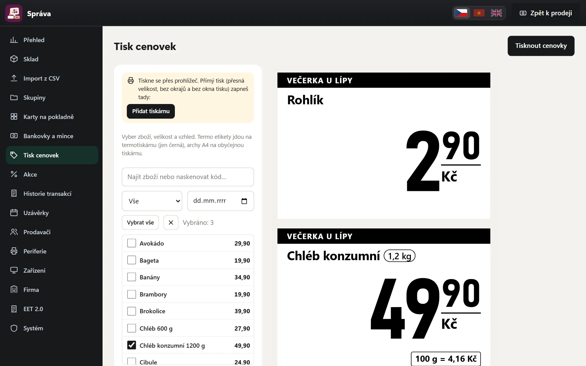

Prodej na dotykové obrazovce
Velké dlaždice se zbožím a obrázky, skupiny, PLU, číselník s násobením, slevy na položku i na celý nákup a odložení nákupu. Cenu a stav skladu zkontrolujete bez prodeje.
Prodej, EET, účtenky, hotovost a uzávěrka fungují vždy. Další funkce – sklad, cenovky, zálohy na obaly, váhu, akce, zákaznický displej, QR platby, stoly a účty nebo spropitné – si zapnete podle toho, co váš provoz potřebuje. Co je zapnuté hned, záleží na vašem oboru. Navíc si můžete přidat placené doplňky.

Velké dlaždice se zbožím a obrázky, skupiny, PLU, číselník s násobením, slevy na položku i na celý nákup a odložení nákupu. Cenu a stav skladu zkontrolujete bez prodeje.
Čárové kódy čte běžná USB čtečka. Na mobilu nebo tabletu poslouží fotoaparát – na pokladně, při příjmu zboží i v kartě zboží.
U zboží na kilogramy se pokladna zeptá na hmotnost. Přečte i čárové kódy ze štítků váhy – s hmotností nebo cenou.
Akce do zvoleného data a cena od určitého počtu kusů, třeba levnější pivo od 6 kusů. Pokladna je použije sama.
Vratné láhve a přepravky. Zálohu můžete s pivem propojit – pak se přidá sama a s odebráním piva zase odejde. Výkup zálohy jednou dlaždicí.
Velký QR kód pro platbu převodem na pokladně, na zákaznickém displeji i na účtence. Platit lze i kombinovaně – část kartou nebo QR, zbytek hotově. Kartou se platí přes váš samostatný platební terminál.
Enter s prázdným hledáním otevře placení a v placení nákup zaúčtuje. Se čtečkou čárových kódů tak ve špičce prodáváte bez myši a bez zbytečného klikání.
Pro hospody, bary a restaurace – v tarifu Gastro. Jak bude hospoda nastavená
Obrazovka stolů po místnostech s útratou a časem od poslední objednávky. Víc účtů u jednoho stolu, účet na jméno u baru. Objednávat můžete z pokladny i z tabletu u stolu.
Každý host zaplatí své položky. Položky nebo celý účet přesunete k jinému stolu či na nový účet. Doklad a EET vzniknou až při zaplacení.
Po objednání vyjede bon na pokladní tiskárně v kuchyni nebo u výčepu, i s poznámkou pro kuchyni. Když odeberete položku, která už do kuchyně odešla, vyjede tam stornovací bon.
Od 1. 1. 2027 platí ve stravovacích službách nová pravidla pro DPH a spropitné. Obojí SuperKasa umí zdarma v ceně tarifu – žádný placený doplněk.
Na pokladně přepnete, jestli host nakupuje na místě, nebo s sebou. Nealko a káva podávané na místě mají od 1. 1. 2027 sazbu 12 %, s sebou 21 % – doklad použije správnou sazbu a cena pro zákazníka se nemění. Na účtence je „Prodej: S sebou“. Sazbu pro prodej s sebou nastavíte u každé skupiny zboží ve Správě.
Po zaplacení klepnete na Spropitné – komu, kolik, hotově nebo kartou. Spropitné pro zaměstnance není tržba, do EET nejde a v uzávěrce je zvlášť. Spropitné, které si nechává podnik, jde do tržeb a do EET. Ve Správě uvidíte měsíční přehled po lidech a podíl na příjmech: pokladna hlídá limit 7 % pro osvobození od daně a podklad pro mzdy stáhnete jako CSV. V tarifech Obchod, Gastro a Služby.
Sazby DPH a podmínky osvobození spropitného ověřte s účetní – osvobození do 7 % se podle zákona týká zaměstnanců ve stravovacích službách.
Tržby se posílají do EET 2.0 na pozadí. Při výpadku internetu pokladna odesílání opakuje a lišta ukazuje, jestli je vše odeslané. Jak to funguje
Účtenka jde po zaplacení rovnou do pokladní tiskárny (Epson TM-T88 a kompatibilní, role 80 i 58 mm). Na počítači stačí otevírat pokladnu zástupcem Chromu s tiskem bez dialogu – návod je přímo v pokladně. Pokladní zásuvku připojenou k tiskárně pokladna otevře zároveň s tiskem účtenky (u tisku přes Windows to nastavíte v ovladači tiskárny).
Přepínačem v liště nad nákupem tisk vypnete, když zákazník účtenku nechce, a zase ho zapnete. Každá pokladna si volbu pamatuje.
Storno celého dokladu i vratka vybraných položek ze staršího nákupu, s PINem vedoucího a povinným důvodem. Nic se nemaže – vždy vznikne nový doklad.
Počáteční hotovost, vklady a výběry, průběžná a denní uzávěrka s počítáním bankovek a mincí a rozdílem proti pokladně. Všechna zařízení obchodu prodávají do jedné společné směny, takže je jeden součet a jedna uzávěrka. Po 20 hodinách otevřené směny pokladna na uzávěrku upozorní a ve 23:59 ji udělá sama. Prodavači mohou dělat slepou uzávěrku.
Tržba dne podle sazeb DPH a způsobů platby na jednom lístku. Vytisknete ho jedním klepnutím pro účetní nebo do šanonu.
Tržby podle DPH, plateb, prodavačů a skupin, průměrný nákup, slevy, storna a nejprodávanější zboží. Grafy po hodinách i dnech.
Zaokrouhlení na koruny, návrh bankovek a výpočet vrácení. Upozornění na odvod hotovosti nad limit.
Každý ostrý doklad nese otisk svých údajů navázaný na předchozí doklad. Jedním tlačítkem ověříte, že žádný doklad nikdo dodatečně nezměnil ani nesmazal.
Zákazník dostane účtenku jako odkaz do telefonu – bez papíru.

Příjem zboží skenováním s dodavatelem, číslem faktury a nákupní cenou. Inventura regálu mění jen naskenované zboží. Hlídání minimálního stavu a návrh objednávky podle prodejů.
Datum spotřeby při příjmu i v kartě zboží, přehled zboží, které brzy projde, a štítek přímo na dlaždici. Neprodané nebo prošlé zboží odepíšete.
Cenovky vytisknete na pokladní tiskárně (Epson TM-T88 a kompatibilní), na etiketové tiskárně nebo na A4. S cenou za kg, litr nebo 100 g, akční přeškrtnutou cenou a čárovým kódem. Snadno vyberete zboží, kterému se změnila cena.
Naskenujete neznámý kód a pokladna sama dohledá název i fotku ve sdílené databázi SuperKasa – i u cigaret a místních výrobků. Vy jen zkontrolujete název a doplníte cenu. Do databáze se posílá jen kód, název, balení, skupina, DPH a fotka zboží – nikdy ceny, prodeje ani údaje o obchodě. Přispívání vypnete ve Správě → Systém.
Zboží načtete ze souboru CSV, třeba z exportu jiné pokladny. Opakovaný import nic nezdvojí, jen aktualizuje ceny. Fotky zboží se doplní podle EAN.
Objednávky z E-shopu super přijdou rovnou do pokladny. E-shop i kasa mají jeden společný sklad, takže se zboží neprodá dvakrát. Propojíte jednou, pak e-shop spravujete z pokladny bez dalšího hesla.
Podle oboru se založí skupiny s DPH, dlaždice a ukázkové položky – pečivo, ovoce, zelenina, zálohy, káva nebo služby. Vyberte svůj obor
Nebo popíšete vlastními slovy, co prodáváte, a pokladna navrhne skupiny s DPH, obrázky a první položky – zdarma a bez internetu, česky, vietnamsky i anglicky. Návrh uvidíte a upravíte. Sazby DPH ověřte s účetní.
Čeština, vietnamština a angličtina. Každý prodavač má svůj jazyk a přepne ho jedním tlačítkem. Doklad pro zákazníka je vždy česky.
Napíšete, co potřebujete – třeba „kolik jsme dnes utržili“ nebo „zdraž pivo o 5 %“ – a asistent to v pokladně připraví. Než něco změní, ukáže vám to a počká na potvrzení. Rozumí česky, vietnamsky i anglicky.
Přihlášení PINem, role prodavač, vedoucí a majitel. Záznam změn ukáže, kdo co upravil.
Druhá obrazovka otočená k zákazníkovi: nákup s fotkami, QR kód k platbě, vrácená částka a mezi nákupy vaše akce.
Pokladnu otevřete v prohlížeči na počítači, tabletu i mobilu. Všechna zařízení obchodu prodávají do jedné společné směny s jedním součtem a jednou uzávěrkou. Na novém zařízení se majitel přihlásí e-mailem a heslem, prodavači pak PINem.
Data obchodu se každý den zálohují na serveru a kopie se ukládá i mimo něj. Klíč certifikátu EET je uložený jen zašifrovaně.
Doklady, uzávěrky a další data kdykoli vyexportujete. Export funguje ještě 12 měsíců po skončení pronájmu.
Nové verze dostanete automaticky v ceně tarifu. Nic neinstalujete ani nestahujete.
Při výpadku internetu prodáváte dál hotově i kartou. Účtenky se po připojení samy nahrají a do EET jdou s původním časem. QR platba, body a účty ze stolu potřebují připojení.
Soukromý odkaz na přehled v telefonu: dnešní tržba, platby, prodavači, nejprodávanější zboží, otevřené pokladny s hotovostí v zásuvce, rozpis směn a stav EET. Jen pro čtení, bez párování zařízení a odkudkoli.
O každém prodeji vám telefon dá vědět – částka, platba, zařízení, prodavač i položky. Zdarma přes prohlížeč, bez další aplikace. Upozornění můžete kdykoli vypnout. Na iPhonu nejdřív přidejte SuperKasu na plochu (Sdílet → Přidat na plochu) a otevřete ji z ikony.
Pokladna tiskne na tiskárnu, kterou už máte ve Windows, nebo přes Bluetooth a USB u tabletu s Androidem. Telefon s Androidem i iPhone umí tisknout na tiskárnu hlavní kasy, i přes internet.
SuperKasa Cloud: obchod založíte na app.superkasa.cz a pokladna běží na adrese vašeho obchodu – na počítači, tabletu i mobilu. Majitel se přihlašuje e-mailem a heslem, prodavači PINem. Tiskne na tiskárnu nainstalovanou v zařízení. Přihlásit se
Funkce nad tarif, které si přidáte jen tehdy, když je opravdu využijete. Stejná cena ve všech oborech, ve 10denní zkoušce zdarma. Ceník doplňků
Prodavači zapisují příchod a odchod PINem na pokladně. Rozpis směn na týden, plán proti odpracovaným hodinám a podklad pro mzdy.
79 Kč měsíčně s DPH · pro obory Obchody, Gastro, Služby · Ceník doplňků
Zákaznická karta nebo telefon: body za nákup, sleva za body, stálá sleva pro VIP. Dárkové poukazy s čárovým kódem a zůstatkem; do EET 2.0 jdou podle § 17 odst. 2 zákona č. 180/2026 Sb. – ověřte s účetní.
69 Kč měsíčně s DPH · pro obory Obchody, Gastro, Služby · Ceník doplňků
Kalendář termínů pro salony a služby (kdo, kdy, jak dlouho, jaká služba) i rezervace stolů. Hlídá překryvy, službu z rezervace prodáte jedním klepnutím.
99 Kč měsíčně s DPH · pro obory Služby, Gastro · Ceník doplňků
Suroviny kávy, jídel, koktejlů a zákusků: prodej odepíše suroviny ze skladu, storno je vrátí. Nákladová cena, marže a kolik porcí ještě uděláte.
79 Kč měsíčně s DPH · pro obory Gastro · Ceník doplňků
Storna, vratky, zrušené nákupy, odebrané položky, slevy, otevření zásuvky a rozdíly při uzávěrce po prodavačích – pokladna ukáže, kdo je výrazně nad průměrem.
69 Kč měsíčně s DPH · pro obory Obchody, Gastro, Služby · Ceník doplňků
Doplněk se platí k tarifu (189 Kč) zvlášť, ročně o 10 % levněji. Bez závazku – odemkne ho stejný licenční klíč jako tarif a zapnete ho ve Správě → Systém → Funkce pokladny. Ceník
Zavolejte nám a popište, co ve vašem provozu potřebujete. SuperKasu dál rozvíjíme podle potřeb obchodů.